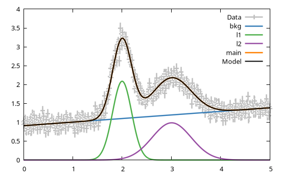
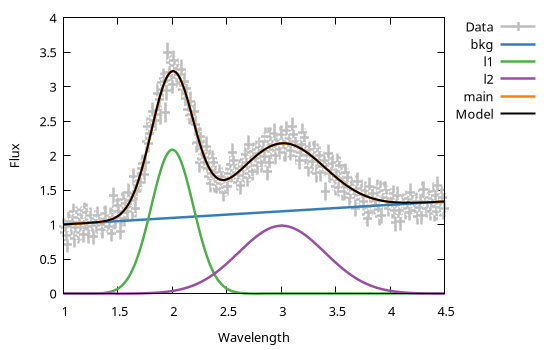

Miscellaneous
Generate mock datasets
In some case it is useful to test a model for robustness before the emprical data are available for fitting. This can be achieved via the GModelFit.mock() function, whose purpose is to generate a mock dataset which simulates a measurement process by adding random noise to the foreseen ground-truth.
Example
using GModelFit
model = Model(:main => @fd (x, T=3.14) -> sin.(x ./ T) ./ (x ./ T))
# Generate a mock dataset on a specific domain
dom = Domain(1:0.1:50)
data = GModelFit.mock(Measures, model, dom, seed=1)
# Fit model against the mock dataset
bestfit, stats = fit(model, data)(Components:
╭───────────┬───────┬───────┬─────────────┬───────────┬───────────┬───────────┬─────────╮
│ Component │ Type │ #Free │ Eval. count │ Min │ Max │ Mean │ NaN/Inf │
├───────────┼───────┼───────┼─────────────┼───────────┼───────────┼───────────┼─────────┤
│ main │ FComp │ 1 │ 23 │ -0.2172 │ 0.9832 │ 0.08517 │ 0 │
╰───────────┴───────┴───────┴─────────────┴───────────┴───────────┴───────────┴─────────╯
Parameters:
╭───────────┬───────┬────────┬──────────┬───────────┬───────────┬────────┬───────╮
│ Component │ Type │ Param. │ Range │ Value │ Uncert. │ Actual │ Patch │
├───────────┼───────┼────────┼──────────┼───────────┼───────────┼────────┼───────┤
│ main │ FComp │ T │ -Inf:Inf │ 3.141 │ 0.01238 │ │ │
╰───────────┴───────┴────────┴──────────┴───────────┴───────────┴────────┴───────╯
, Fit summary: #data: 491, #free pars: 1, red. fit stat.: 1.0596, status: OK
)Serialization
A few structures, namely GModelFit.ModelSnapshot, GModelFit.FitSummary and Measures{N}, as well as Vector(s) of such structures can be serialized, i.e. stored in a file using a dedicated JSON format. The structures can lated be de-serialized in a separata Julia session without the need to re-run the fitting process used to create them in the first place.
Example
In the following we will generate a few GModelFit.jl objects and serialized them in a file.
using GModelFit
dom = Domain(1:0.1:50)
model = Model(:main => @fd (x, T=3.14) -> sin.(x ./ T) ./ (x ./ T))
data = GModelFit.mock(Measures, model, dom, seed=1)
bestfit, stats = fit(model, data)
# Serialize objects and save in a file
GModelFit.serialize("save_for_future_use.json", bestfit, stats, data)The same objects can be de-serialized in a different Julia session:
using GModelFit
bestfit, stats, data = GModelFit.deserialize("save_for_future_use.json")3-element Vector{Any}:
Components:
╭───────────┬───────┬───────┬─────────────┬───────────┬───────────┬───────────┬─────────╮
│ Component │ Type │ #Free │ Eval. count │ Min │ Max │ Mean │ NaN/Inf │
├───────────┼───────┼───────┼─────────────┼───────────┼───────────┼───────────┼─────────┤
│ main │ FComp │ 1 │ 23 │ -0.2172 │ 0.9832 │ 0.08517 │ 0 │
╰───────────┴───────┴───────┴─────────────┴───────────┴───────────┴───────────┴─────────╯
Parameters:
╭───────────┬───────┬────────┬──────────┬───────────┬───────────┬────────┬───────╮
│ Component │ Type │ Param. │ Range │ Value │ Uncert. │ Actual │ Patch │
├───────────┼───────┼────────┼──────────┼───────────┼───────────┼────────┼───────┤
│ main │ FComp │ T │ -Inf:Inf │ 3.141 │ 0.01238 │ │ │
╰───────────┴───────┴────────┴──────────┴───────────┴───────────┴────────┴───────╯
Fit summary: #data: 491, #free pars: 1, red. fit stat.: 1.0596, status: OK
Measures{1}: (length: 491)
╭─────────┬───────────┬───────────┬───────────┬───────────┬───────────┬─────────╮
│ │ Min │ Max │ Mean │ Median │ Std. dev. │ Nan/Inf │
├─────────┼───────────┼───────────┼───────────┼───────────┼───────────┼─────────┤
│ values │ -0.3439 │ 1.1 │ 0.08667 │ 0.02283 │ 0.2741 │ │
│ uncerts │ 0.06002 │ 0.06985 │ 0.06166 │ 0.06082 │ 0.00229 │ │
╰─────────┴───────────┴───────────┴───────────┴───────────┴───────────┴─────────╯
The solver_retval field in the GModelFit.FitSummary structure can not be serialized. Upon deserialization it will contain nothing.
Quick plot (1D)
The GModelFit.jl package implements Gnuplot.jl recipes to display plots of Measures{1} and ModelSnapshot objects., e.g.:
Example
Create a model, a mock dataset and run a fit:
using GModelFit
dom = Domain(0:0.01:5)
model = Model(:bkg => GModelFit.OffsetSlope(1, 1, 0.1),
:l1 => GModelFit.Gaussian(1, 2, 0.2),
:l2 => GModelFit.Gaussian(1, 3, 0.4),
:main => SumReducer(:bkg, :l1, :l2))
data = GModelFit.mock(Measures, model, dom)
bestfit, stats = fit(model, data)A plot of the dataset and of the best fit model can be simply obtained with
using Gnuplot
@gp data bestfit
You may also specify axis range, labels, title, etc. using the standard Gnuplot.jl keyword syntax, e.g.:
using Gnuplot
@gp xr=[1, 4.5] xlabel="Wavelength" ylab="Flux" "set key outside" data bestfit